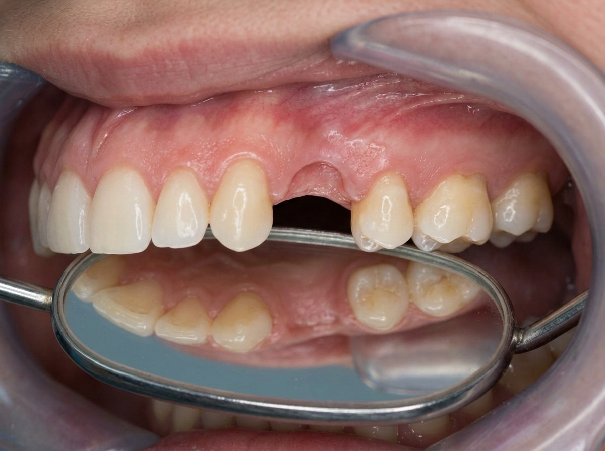
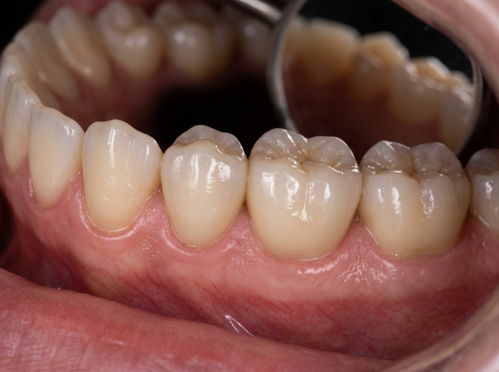
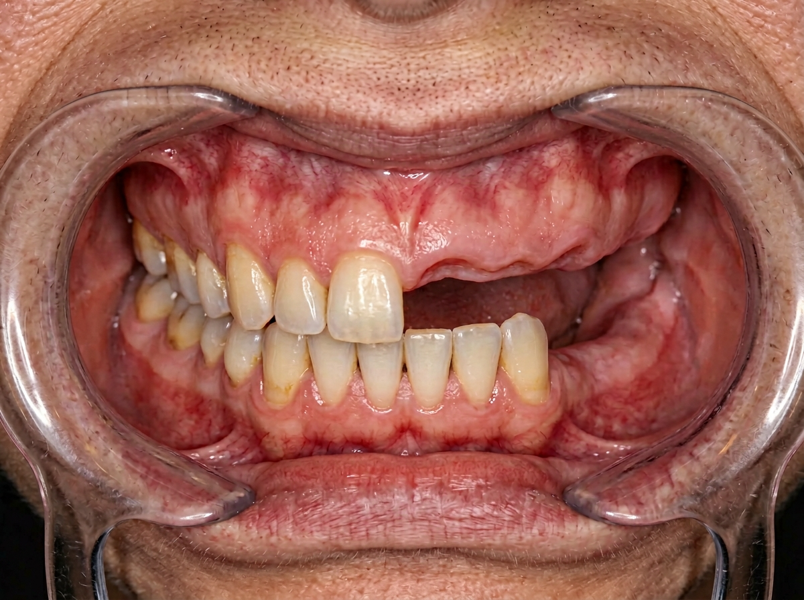
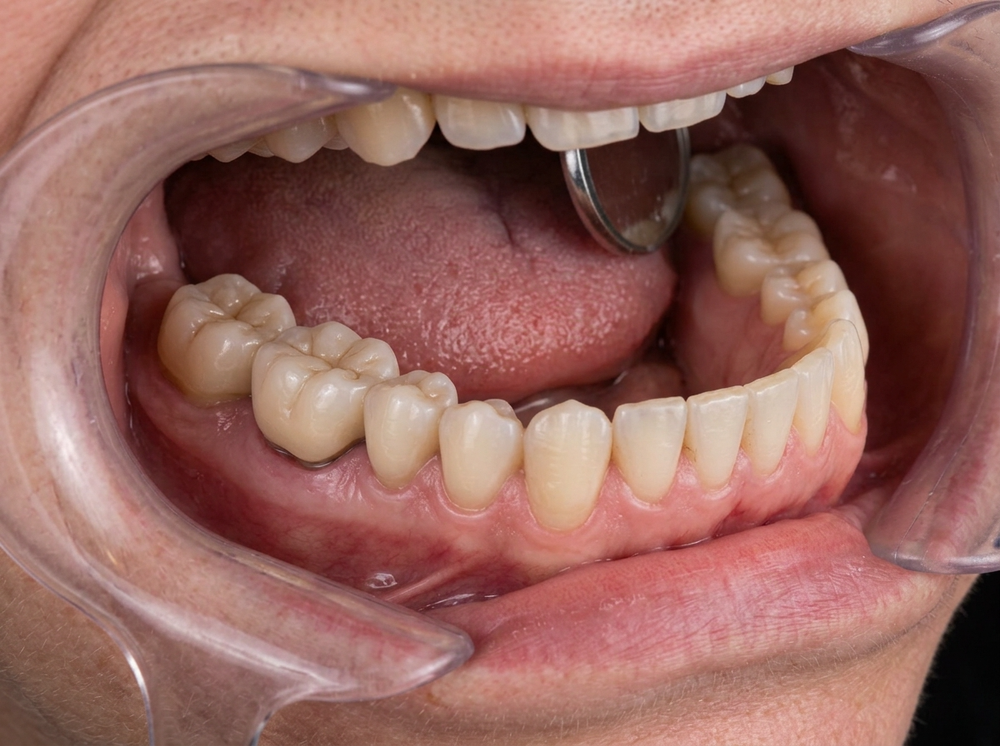

Implantologia dentale
Restituiamo funzionalità ed estetica al tuo sorriso con impianti in titanio biocompatibile e protesi realizzate nel nostro laboratorio interno.
Restituiamo funzionalità ed estetica al tuo sorriso con impianti in titanio biocompatibile e protesi realizzate nel nostro laboratorio interno.

Cos'è l'implantologia
L'impianto dentale è una vite in titanio di pochi millimetri che viene inserita nell'osso mascellare o mandibolare per sostituire la radice di un dente mancante. Il titanio è un materiale biocompatibile che si integra con l'osso circostante attraverso un processo naturale chiamato osteointegrazione, che richiede generalmente dai 3 ai 6 mesi.
Una volta completata l'integrazione, sull'impianto viene posizionata una corona protesica realizzata su misura nel nostro laboratorio odontotecnico interno, identica nell'aspetto e nella funzione a un dente naturale. Gli impianti possono essere utilizzati per sostituire un singolo dente, più elementi o un'intera arcata.
Le soluzioni
Un impianto con corona permette di colmare lo spazio senza coinvolgere i denti adiacenti, come accadrebbe con un ponte tradizionale.
Con pochi impianti strategicamente posizionati è possibile sostenere un ponte fisso che ripristina la funzionalità di più elementi.
Tecniche come il carico immediato consentono, in condizioni idonee, di inserire impianti e protesi provvisoria nella stessa seduta.
Quando l'osso è insufficiente, si possono applicare tecniche di rigenerazione guidata (GBR) per ricreare il volume necessario all'inserimento dell'impianto.
Come funziona
Visita clinica, radiografie e, se necessario, TAC per valutare la quantità e la qualità dell'osso disponibile.
Definizione del piano chirurgico e protesico, scelta dei materiali e condivisione di tempi e costi con il paziente.
Inserimento dell'impianto in anestesia locale. L'intervento è generalmente ben tollerato, con tempi di recupero contenuti.
Dopo il periodo di osteointegrazione, viene applicata la corona definitiva realizzata nel nostro laboratorio interno. Seguono controlli periodici di mantenimento.
Documentazione clinica
Alcuni esempi di riabilitazioni implantari eseguite nel centro, con il consenso dei pazienti.


Sostituzione di due elementi mancanti nella zona premolare con impianti in titanio e corone in ceramica. Tempo di trattamento: 4 mesi.


Ripristino della funzionalità masticatoria con ponte fisso su impianti nel settore posteriore sinistro. Tempo di trattamento: 5 mesi.
Le immagini sono a scopo illustrativo. Ogni caso clinico è unico: i risultati possono variare in base alle condizioni individuali del paziente. Documentazione pubblicata con il consenso informato dei pazienti ai sensi del GDPR.
Domande frequenti
L'inserimento dell'impianto avviene in anestesia locale; durante l'intervento non si avverte dolore. Nei giorni successivi è normale un leggero gonfiore o fastidio, gestibile con i farmaci prescritti dal dottore.
Con una corretta igiene orale domiciliare e controlli periodici, un impianto può durare molti anni. La durata dipende anche da fattori individuali come le condizioni di salute generale e le abitudini del paziente.
In molti casi sì. Esistono tecniche di rigenerazione ossea che permettono di ricostruire il volume d'osso necessario. La fattibilità viene valutata durante la visita con l'ausilio di esami radiografici.
Il tempo varia da paziente a paziente. Generalmente, tra l'inserimento dell'impianto e la corona definitiva passano dai 3 ai 6 mesi. In casi selezionati è possibile procedere con il carico immediato.